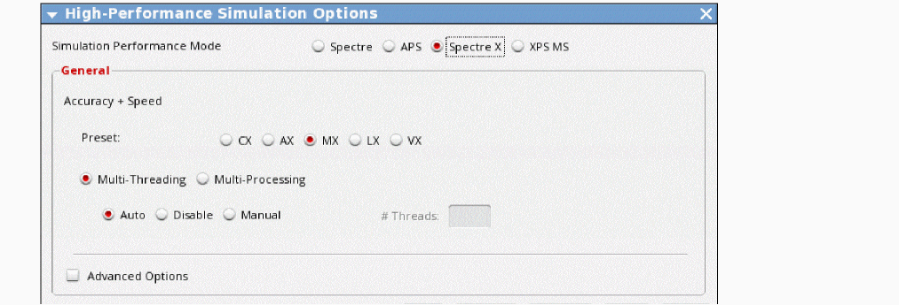
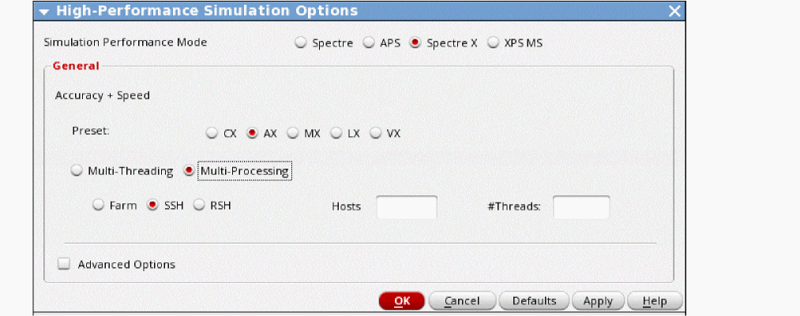
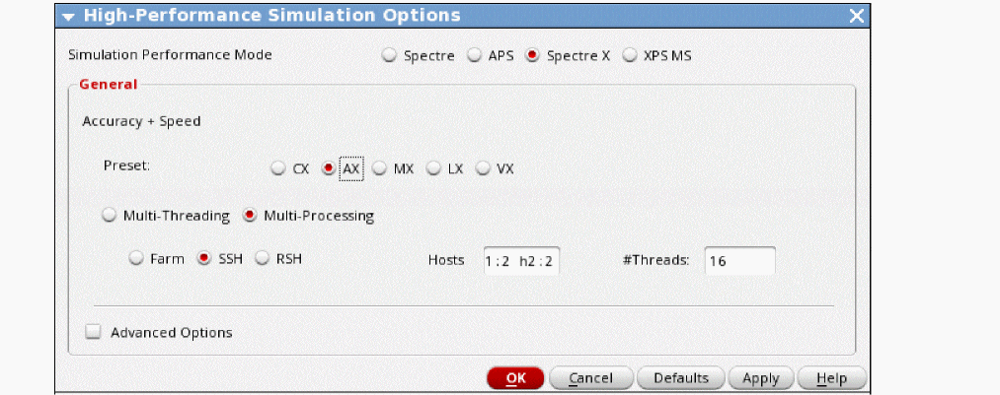
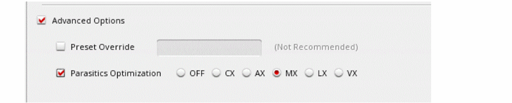

3
Setting up a Spectre X RF Simulation
Spectre X RF brings the speed advantages of Spectre X to the RF analyses. Spectre X RF has two basic modes. The first mode is running on a single host with multiple threads. In the second mode, Spectre X RF XDP allows multiple hosts with multiple process on distributed nodes on the network. The second mode is only available for harmonic balance and shooting PSS including the small-signal analyses, sweeps, and Monte Carlo.
Spectre X is most effective for large circuits using advanced nodes but should improve run times for medium-sized circuits on older processes as well.
Enabling the Spectre X RF Mode
To enable and set up the Spectre X RF simulation mode in ADE Explorer:
-
Choose Setup - High-Performance Simulation.
The High-Performance Simulation Options form appears. -
Choose Spectre X from Simulation Performance Mode.
 -
Choose a Preset.
The preset control sets the accuracy of the overall simulation. CX is most accurate and VX is least accurate. Generally, the speed of the simulation will increase as the accuracy becomes lower. The LX and VX modes are not recommended. -
To enable Spectre X RF XDP, select the Multi-Processing option.
Some points to note when selecting Multi-Processing:- Both shooting and Harmonic Balance and the associated small-signal analyses are supported in XDP.
- The following HB analyses are not supported in XDP: Loadpull, HBSTB, HBSP, and Envelope (including wireless).
- The following shooting analyses are not supported in XDP: PSP, Envelope, LSSP, QPSS, and associated small-signal analyses.
-
Choose the SSH job distribution mode.
The RSH mode is also supported and may be appropriate for your environment. - In the Hosts field, type a list of hostname:number of processes in each host.
-
In the #Threads field, set the number of threads for each process.
 -
To enable control of the RC reduction, select Advanced Options.
 - Select the Parasitics Optimization check box.
-
Choose a parasitic optimization mode.
Points to note about the parasitic options: - Click OK to save and close the form.
Return to top